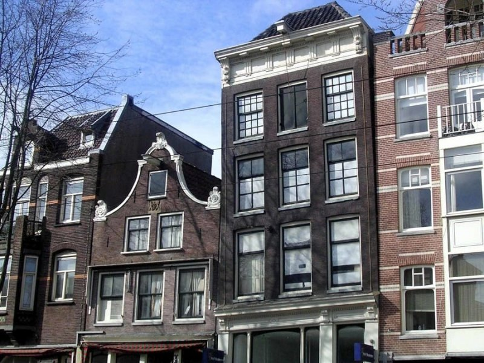

Roma, Itália
Roma ,capital da Itália, é uma cidade cheia de história, cultura e beleza
A cidade conta com diversos pontos turísticos como o Coliseu e o Vaticano
Coliseu
O Coliseu é um anfiteatro romano construído no século I. Era usado para eventos públicos, como jogos e batalhas de gladiadores. É um dos monumentos mais bem preservados da Roma Antiga. O anfiteatro romano é uma das atrações mais famosas de Roma

Vaticano
O Vaticano é um estado independente e a menor cidade-estado do mundo, localizado dentro da cidade de Roma, na Itália. É um local único e de grande importância religiosa e histórica.
Os principais locais para se visitar no Vaticano são
- A Basilica de São Pedro
- Os Museus Vaticanos
- A Praça de São Pedro

Paris, França
Paris, a capital da França, é uma das cidades mais icônicas e visitadas do mundo, conhecida por sua rica cultura, história, arquitetura e gastronomia.
A cidade tambem conta com diversos pontos turísticos, incluindo a Torre Eiffel, o Museu do Louvre e a Catedral de Notre Notre-Dame
Torre Eiffel
Construída em 1889 como parte da Exposição Universal, a Torre Eiffel é um ícone de Paris e da França. Ela tem 324 metros de altura e oferece vistas espetaculares da cidade a partir de seus diferentes níveis. Os visitantes podem subir de elevador ou escadas.

Museu do Louvre
Um dos maiores e mais famosos museus do mundo, o Louvre abriga uma vasta coleção de arte e antiguidades, incluindo a Mona Lisa de Leonardo da Vinci e a Vênus de Milo

Catedral de Notre Dame
A Catedral de Notre-Dame de Paris, frequentemente chamada apenas de Notre-Dame, é uma catedral gótica icônica localizada no coração de Paris, França. Apresenta fachadas impressionantes decoradas com esculturas detalhadas que retratam cenas religiosas. Seus vitrais são especialmente renomados, enchendo o interior de luz colorida. As gárgulas e quimeras no topo da catedral também são características marcantes.

Londres, Inglaterra
A capital da Inglaterra é uma cidade vibrante, repleta de história, cultura
Alguns dos pontos turisticos mais famosos são o Palácio de Buckingham, o Big Ben, o Museu de História Natural
Palácio de Buckingham
O Palácio de Buckingham é a residência oficial da monarquia britânica em Londres. Os visitantes podem assistir à Troca da Guarda em certos dias e explorar os belos jardins e salões de estado.

Big Ben
O nome oficial do relógio é o Great Bell (Grande Sino), mas ele é carinhosamente chamado de Big Ben. A torre que abriga o relógio é a Torre Elizabeth, anteriormente conhecida como a Torre do Relógio. A torre está localizada no Palácio de Westminster.

Museu de História Natural
O Museu de História Natural de Londres (Natural History Museum) é um dos museus mais renomados do mundo e é uma atração imperdível para os amantes da natureza, da ciência e da história.
Apresenta exposições sobre a vida na Terra, incluindo esqueletos de dinossauros.
Amsterdam, Holanda
Amsterdam, é uma cidade encantadora conhecida por seus canais pitorescos, arquitetura única, rica história e cultura diversificada.
Alguns das principais atrações da cidade são a casa de Anne Frank e o Museumplein
Casa de Anne Frank
A Casa de Anne Frank é um museu dedicado à história de Anne Frank, uma jovem judia que se escondeu dos nazistas durante a Segunda Guerra Mundial A Casa de Anne Frank é agora um museu que preserva o Anexo Secreto e exibe objetos relacionados à vida de Anne e sua família. O museu também explora a história do Holocausto e os impactos do conflito.
Museumplein
O Museumplein, que significa "Praça dos Museus" em holandês, é uma área ampla e gramada localizada em Amsterdã, rodeada por alguns dos museus mais famosos da cidade. Sendo eles:
- o Rijksmuseum, que abriga uma vasta coleção de arte e artefatos holandeses, incluindo obras de Rembrandt e Vermeer;
- o Museu Van Gogh, dedicado às obras do pintor holandês Vincent van Gogh;
- e o Stedelijk Museum, focado em arte moderna e contemporânea.

Barcelona, Espanha
Barcelona é uma das cidades mais visitadas da Espanha, conhecida por sua arquitetura única e cultura rica.
Sobre a arquitetura é famosa principalmente pelas obras-primas de Antoni Gaudí, como a Sagrada Família.
Sagrada Família
Projetada pelo famoso arquiteto Antoni Gaudí, a Sagrada Família é uma basílica inacabada e uma obra-prima do modernismo catalão. Sua arquitetura única combina elementos religiosos e naturais